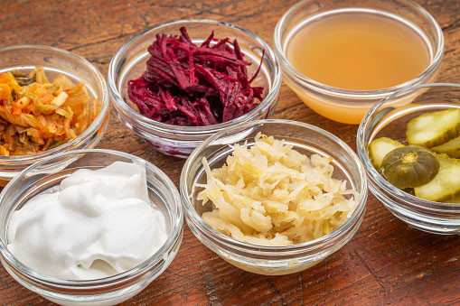

History of Fermenting
Fermentation has been an essential part of human civilization for thousands of years, dating back to ancient times when people discovered how to preserve food naturally...
Science Behind Fermenting
At its core, fermentation is a metabolic process where microorganisms such as bacteria, yeast, and fungi break down sugars into acids, gases, or alcohol...
High Nutritional Benefits
Fermented foods are more than just flavorful; they offer a range of health benefits...
- Supports Gut Health: The probiotics in fermented foods help maintain a healthy balance of gut bacteria...
- Enhances Nutrient Absorption: Fermentation breaks down compounds that may inhibit nutrient absorption...